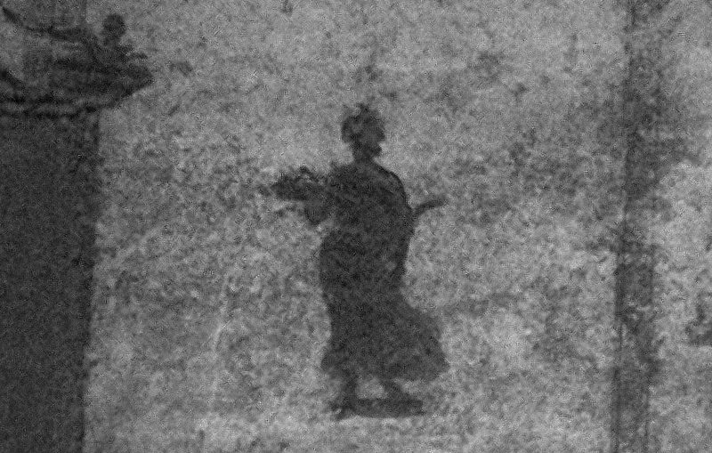

Other work
Infrared imaging at Pompeii
Egyptian Blue pigment glows in the near infrared when it's lit with visible light, and modified night-vision goggles can see that. The usual method subtracts an unlit photo from a lit one, which comes out noisy and uneven.
I wrote the code for our strobe method. It takes a few seconds of 4K video from the goggles under a strobing light and sorts each pixel's brightness over time. It drops the darkest 15%, the brightest 15% and the middle 40%, averages the rest into a lit frame and an unlit frame, and subtracts them. Python, NumPy and OpenCV.



Asteroid orbit determination
We determined the orbit of asteroid 2007 LR32 from twelve of our own telescope images. Each of us wrote our own Method of Gauss code in Python and ran a 10,000-sample Monte Carlo for the uncertainties. My result was semi-major axis a = 2.593 ± 0.085 au, eccentricity e = 0.511 ± 0.013 and inclination i = 10.12 ± 0.19°, each within 1.2% of JPL's values. We submitted the observations to the Minor Planet Center.

MIT Rocket Team
I designed servo-valve mounts in SolidWorks for Project Osiris, a throttleable liquid engine that uses nitrous oxide, and drafted valve-failure procedures for a throttle valve test.
Nuclear forensics research
I debugged the lab's MATLAB pipeline for flash calorimetry data and validated a mass-estimation method on indium samples.
MIT EMS
I'm a Nationally Registered EMT and run 911 calls in Cambridge and Boston.